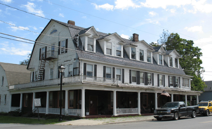
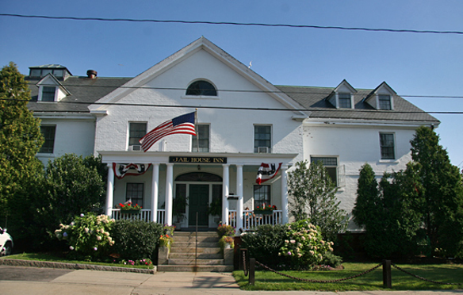
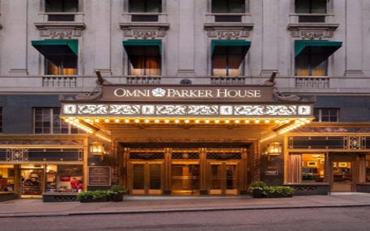
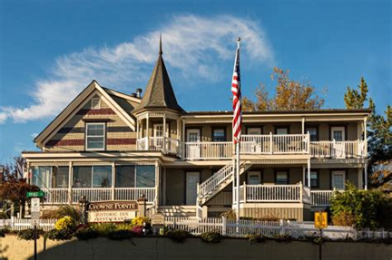

The Shanley Hotel | 2-star hotel | (845) 217-3112
Based on a one night stay on January 9th, 2019
Hotel Rates
1 Full Bed
1 King Bed
1 Deluxe King Bed
$119
$119
$119
One of America's most popular, and historically rich buildings dating back to 1845. James and Beatrice Shanley purchased the property in 1906 and lost three children (Kathleen, James, William) in the home. In 1911, a hotel employee's daughter (Rosie) was killed when she fell into a nearby well. In 1918 Beatrice Shanley's sister died in the hotel from the flu. In 1979, William Blackmur died while in residence at the hotel. The very deadly history of the hotel could be the reason so many claims have been made. Guests at the Shanley have experienced rocking chairs seen rocking on their own, mysterious clock chimes, cold and hot spots, whistling, footsteps, piano music, voices, the laughing of children(likely Kathleen, James, and William Shanley) . Many have seen shadows and apparitions at the Shanley and report the feeling of being watched. Guests have also reported a ghost cat and caught photographic evidence. James Shanley, who whistles, smells of tobacco, and is rumored to wander the hallways along with his weeping wife. The hotel has been subjected to many paranormal investigations such as Ghost Hunters.
Jailhouse Inn
Newport, Rhode Island

The Jailhouse Inn | 3-Star Hotel | (401)-847-4638
Based on a one night stay for two on January 9th, 2019
Hotel Rates
1 Queen Bed
1 King Bed
1 Deluxe King bed
$105
$125
$150
The Jailhouse Inn was built in 1772, by George Lawton and Oliver Ring Warner, replacing an earlier jail on the same location. Originally, the jailhouse had been the police headquarters for the whole county and stayed that until 1986, when it was shut down as headquarters moved. In 2005 the Jailhouse was refurbished into the Inn. The third floor is rumored the most haunted section of the hotel, where cold spots are caught on thermostats even though no windows are open, and it is summer. Also whispers from disembodied voices are heard by staff and guests as well. The staff openly talk about their experiences of objects moving at night and screams being heard in the halls. The hotels website showcases a haunted tour, Newport Ghost Tours (1-866-33GHOST), which is lantern-led, evening walks. They depart from within two blocks of the Jailhouse.
Omni Parker House
Boston, Massachusetts

The Omni Parker House| 4-Star Hotel |(617)-227-8600
Based on a one night stay on January 9th, 2019
Hotel Rates
1 Full Bed
1 Queen Bed
1 Premier Suite King Bed
$119
$129
$190
Founded by Harvey D. Parker, in 1855, the Omni Parker House is the oldest of Boston's elegant inns and the longest continuously operating hotel in the United States. The hotel is also located across the street from the historic King's Chapel and its graveyard which is the oldest graveyard in Boston. The Omni Parker House consists of two buildings, the main building and a ten-floor annex behind it, on the corner of Chapman Place and Bosworth Street. A bearded gentleman dressed from the colonial era has been sighted on the 9th and 10th floors and once at the end of a guest's bed in Room 1012, rumored to be Harvey Parker . On the third floor in Room 303 guests report strange shadows throughout the room and the bathtub water would just turn on randomly by itself. Management eventually turned this room into a storage closet for unspecified reasons. Some speculate that it was because a guest committed suicide in this room; but no one knows for sure. Stephen King's "1408" was inspired by the events occurring in Room 303. The elevator would regularly stop on the 3rd floor without pushing the button or when no one was around. Reports of chairs rocking by themselves are frequently reported too.
Crowne Point Historic Inn and Spa
ProvinceTown, Massachusetts

The Crowne Point Historic Inn | 4-Star Hotel | (508)-487-6767
Based on a one night stay on January 9th, 2019| *ADA Compliant
Hotel Rates
1 Queen Bed
1 King Bed
1 Premier King Suite
$179
$199
$229
The main house/mansion of the Crowne Pointe Historic Inn was built near the turn of the 19th Century for a prosperous sea captain of the Provincetown Harbor. In 1999, a restoration and full-scale renovation of the five buildings that now constitute Crowne Pointe was completed. Crowne Point now has 40 rooms and suites spread out in 6 different buildings. An elderly man believed to be the original Inn’s sea captain can be see pacing the main hotel. As well as “ghostly images” that are often spotted on lobby surveillance cameras. Heady doors opening themselves and slamming without contact has also been reported. Loud foot steps and cold spots are reported by guests as well.